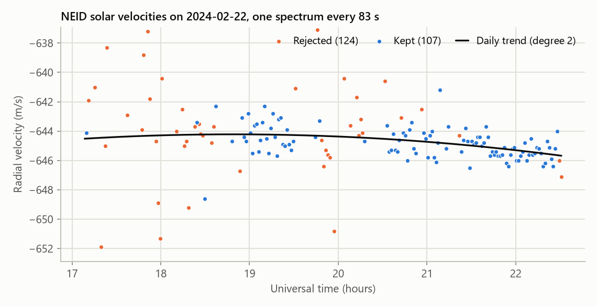

NEID velocities¶
NEID is a spectrograph built for extreme-precision radial velocities on the WIYN 3.5 m telescope at Kitt Peak, Arizona. A small solar telescope feeds it sunlight during the day, so the Sun is observed exactly as a star would be: one disc-integrated spectrum every 83 seconds, reduced by the same pipeline.
What the data are¶
The NEID archive at NExScI exposes the solar observations as a table, neidsolarl2,
through a public TAP service (https://neid.ipac.caltech.edu/TAP/sync). No file needs to
be downloaded to get the velocities. On 12 November 2026 the table had 366 180 spectra:
| Year | Days observed | Spectra |
|---|---|---|
| 2020 | 21 | 4 076 |
| 2021 | 334 | 70 722 |
| 2022 | 212 | 50 199 |
| 2023 | 310 | 72 146 |
| 2024 | 163 | 38 742 |
| 2025 | 302 | 70 390 |
| 2026 | 260 | 59 905 |
The columns used:
| Column | Meaning |
|---|---|
obsjd |
Julian date (UTC) of the start of the exposure |
exptime |
Exposure time, 55 s |
ccfrvmod |
Radial velocity in km/s, from the cross-correlation with a G2 line mask |
dvrms |
Photon-limited error of the velocity in km/s, about 0.3 m/s |
extsnr |
Signal-to-noise ratio of the extracted spectrum, about 380 |
sunagl |
Height of the Sun above the horizon, in degrees |
An example¶
Four consecutive spectra of 22 February 2024, with a cloud arriving:
| Start (UT) | Velocity (km/s) | Error (km/s) | S/N | S/N over its running median | Residual (m/s) | Kept |
|---|---|---|---|---|---|---|
| 19:29:00 | −0.6447 | 0.0002 | 418 | 0.995 | −0.44 | yes |
| 19:30:22 | −0.6411 | 0.0003 | 303 | 0.721 | +3.17 | no |
| 19:31:45 | −0.5822 | 0.0012 | 76 | invalid | +62.07 | no |
| 19:33:08 | −0.6181 | 0.0020 | 46 | invalid | +26.18 | no |
The whole day: 231 spectra, of which 107 are kept.

What we expect from them¶
- A flat velocity with a known noise. The Sun does not move: the velocity of a clear day is constant to within a slow trend of 1 or 2 m/s. The scatter of one spectrum about that trend is 0.8 m/s, three times the photon error, because the surface of the Sun rises and falls with the five-minute oscillations.
- Sensitivity by averaging. One flare, with some ten spectra during it and twenty-five before, is measured to 0.4 m/s. A hundred flares reach a few cm/s.
- Clouds are the enemy. A cloud covers part of a rotating disc and shifts the velocity by tens of m/s. It also lowers the signal, which is how it is recognised.
How they are processed¶
- Time.
obsjdis the start of the exposure; half the exposure is added. The columnccfjdsumis a barycentric date, seven minutes earlier, and must not be compared with flare times recorded at the Earth. - Quality cuts. A spectrum is kept when its velocity error is valid and below 1 m/s, its signal-to-noise ratio is above 50 and within 1 % of its running median over 31 spectra, and its velocity is within 5 robust sigmas of the trend of the day.
- Daily trend. A polynomial of degree 2 is fitted to the kept spectra of each day and subtracted. Days with fewer than 40 kept spectra, or with a scatter above 1.5 m/s, are dropped whole. With fewer than 40 spectra, less than an hour of data, the trend of the day is poorly determined. The scatter of a day is 0.80 m/s in the median and below 1 m/s on nine days out of ten, while days of broken cloud reach tens of m/s, so 1.5 m/s separates the two. The result does not depend on these values. With thresholds of 1, 2 or 3 m/s, or with 20 or 80 spectra, the mean change stays between −0.027 and −0.035 ± 0.035 m/s.
After the cuts 233 857 spectra remain, on 1238 days. The 1 % tolerance on the signal comes from the data: within it the robust scatter is 0.85 to 1.0 m/s, and it grows to 2.3 m/s at 3 % and beyond 5 m/s at 10 %.
The functions are in flinch.neid and
flinch.quality.
Caveats¶
airmassis not usable: it holds placeholder values for many solar spectra. The height of the Sun (sunagl) is used instead.flaggedis not used. It marks 2 % of the spectra, but their velocities are not worse than the rest and its meaning is not documented in the table.rejectedis always zero for the solar spectra.- Pipeline versions. 94 % of the spectra were reduced with version 1.5.3 and 5 % with 1.5.4; their median velocities differ by less than 3 m/s. The daily trend removes any offset.
- What the velocity includes. The daily trend absorbs the slow effects of the rotation of the Earth and of differential extinction. The analysis never compares velocities of different days.
- Hours. NEID observes the Sun between about 16:30 and 22:30 UT, so flares that peak after 22:20 UT have no decay phase.